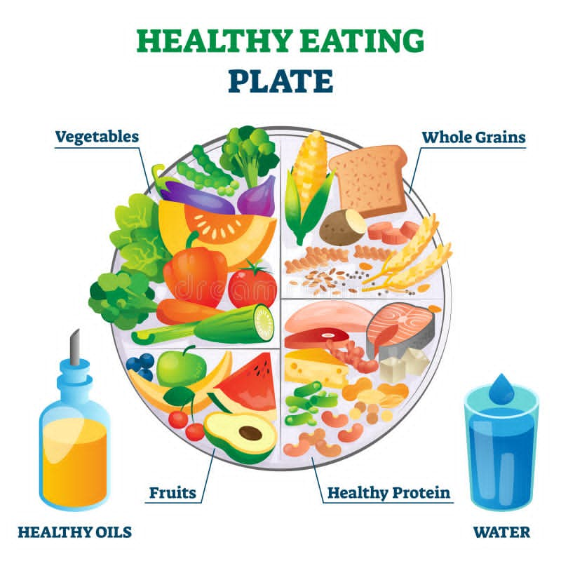

Eating healthy foods keep us strong,focused, and free from sickness.As a student,we need the right nutrition to study well and chase our dreams.Choosing Go,Grow,and Glow foods help us build a better future. A balanced diet can positively impact mental health. Studies show that individuals who consume fresh fruits and vegetables regularly report fewer mental health issues. Nutrient-rich foods can help boost mood and energy levels Visit the National Nutrition Council Websiteto learn more about healthy eating
| Food Group | Examples | Benefit |
|---|---|---|
| Go Foods | Brown rice and bread | Energy for school |
| Grow Foods | Tilapia and Milk | Helps growth on a human body |
| Glow Foods | Spinach and banana | It helps boost immunity |